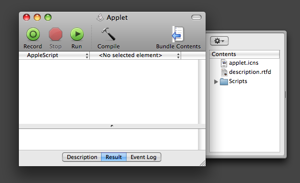
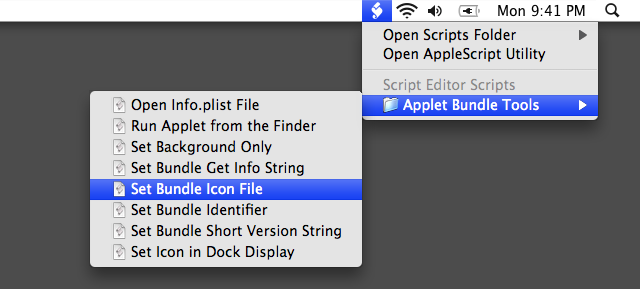
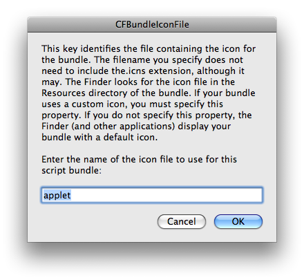

Applet Bundle Tools
Since Mac OS X v10.3 scripts have been savable as application bundles. Bundles are special folders that appear and respond as double-clickable files or applications. A bundle can contain resources such as images, templates, and other files to support the actions of the application. When you save a script as an application bundle, the Bundle Contents drawer is enabled, providing you access to the Resources folder within the applet bundle.

As native Mac OS X bundles, these script applets can utilize the same application properties as other Mac OS X applications, such as custom icons, custom bundle identifiers, and running as background processes. These properties are defined in a special property list file within the script bundle. The Applet Bundle Tools is a set of scripts for retrieving and setting the values of these application properties.

The scripts target the frontmost script opened in the Script Editor application. It must be saved as an applicaiton bundle. When launched, the individual scripts access the script's bundle properties and display their current value in editable dialogs:

By default, most of the bundle properties are inactive until you set them. Be sure to read the description of each property before setting or changing their values.
You can download the scripts installer here.